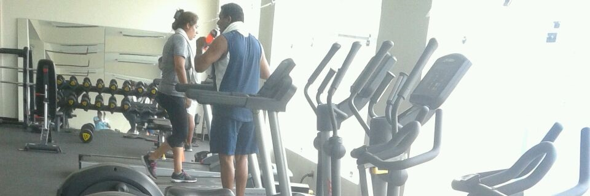
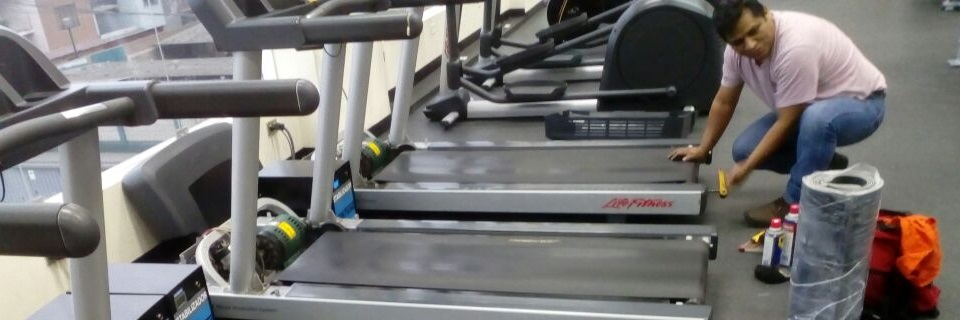
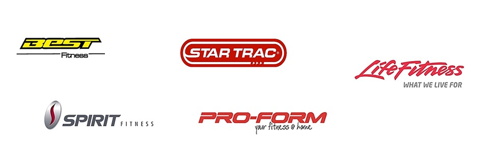

Nosotros

Somos un grupo de personas dedicados al mantenimiento, reparación y armados de todo equipos de gimnasio, con más de 10 años de experiencia presentando servicios a distintos gimnasios, clubes deportivos y condominios en todo Lima y provincias.
Contamos con técnicos profesionales en electrónica y mecánica dando a nuestros clientes un servicio de calidad, tratando de brindar un soporte técnico integral a los diversos equipos de gimnasio.
Nuestro Trabajo

PROCEDIMIENTO DE MATENIMIENTOS PREVENTIVOS DE EQUIPOS DE GIMNASIO
Trotadoras:
- Revisión y alineación de banda.
- Revisión de parámetros electrónicos.
- Revisión y limpieza de tarjeta electrónica del motor.
- Revisión de motores – (Inclinación y trotes).
- Prueba y operatividad del equipo.
NOTA: Después de cada mantenimiento preventivo se realizará un informe técnico.
Bicicletas, Escaladoras y Remos:
- Revisión de alternador.
- Revisión de tarjeta electrónica de alternador.
- Revisión de fajas de poleas.
- Limpieza y lubricación.
- Prueba y operatividad del equipo.
NOTA: Después de cada mantenimiento preventivo se realizará un informe técnico.
EQUIPOS DE MUSCULACIÓN Y/O SPINNING:
- Lubricación de barras y poleas.
- Revisión de ajustes de perno.
- Revisión de cables y poleas.
- Prueba de operatividad de equipos.
- Revisión de volante spinning.
- Revisión de rodamiento- eje central.
- Revisión de faja de volante.
- Lubricación en pastillas de freno.
NOTA: Después de cada mantenimiento preventivo se realizará un informe técnico.
Cabe detallar que:
Toda reparación tiene un costo aparte del mantenimiento. Las visitas serán 04 veces al mes para un mejor chequeo de los equipos.
Algunos clientes
Con 10 años de trayectoria estos clientes ya confian en nosotros:
- Villa Fitness - (Magdalena del Mar)
- Centro Empresarial - (San Isidro)
- Stefano's Gym Spa - (San Martin De Porres)
- Edificio Basadre - (San Isidro)
- Edificio Sky Gym & Spa - (San Isidro)
- Javicho Fitness Gym - (San Martin de Porres)
Estas son algunas de las marcas que manejamos:

Contáctenos
Puedes escribirnos a toolsgym@gmail.com ó llamarnos al +51 941 923 523
Si estas desde tu smartphone ó celular, solo da click en: